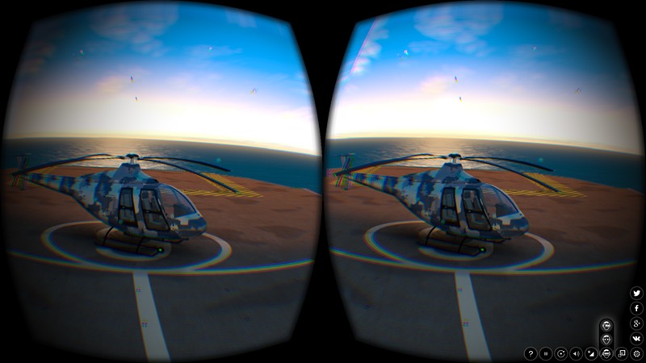
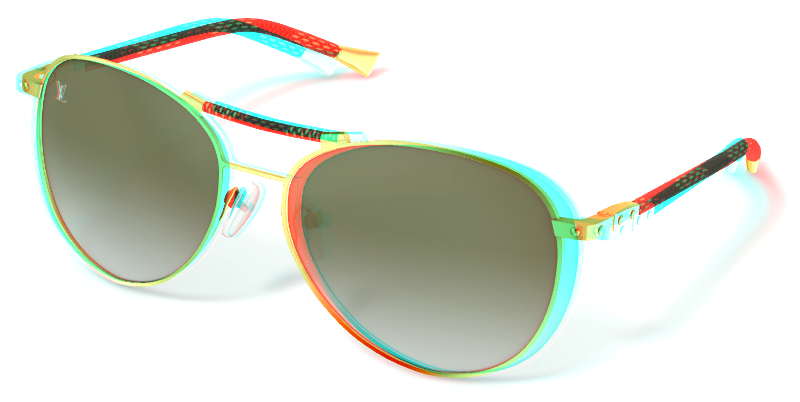
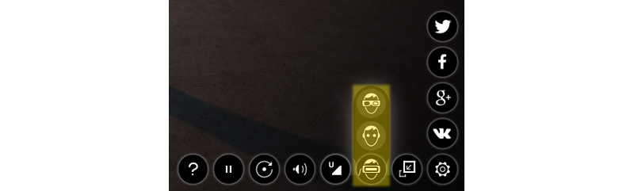
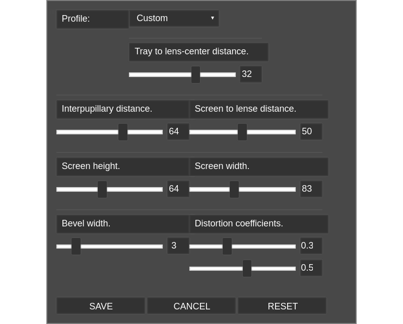

VR and AR¶
Содержание
The following chapter describes Virtual Reality (VR) and Augmented Reality (AR) features of the Blend4Web engine and explains the basics of creating applications capable to work with these outstanding technologies.
Virtual Reality¶
There are numerous VR devices, and Blend4Web engine supports many of them. Using VR in a Blend4Web application does not require any specific changes made to the application itself.
Режим стереоизображения предназначен для просмотра контента в специальных очках и активируется приложением.
Blend4Web поддерживает два стереорежима - анаглифное изображение и HMD (Head-mounted display, шлем виртуальной реальности).
HMD:
{kind=link}
HMD - экспериментальная возможность, она работает только с камерами типа Eye.
Анаглиф:
{kind=link}
Активация¶
Для работы стереорежима HMD нужно установить runtime-утилиту от Oculus (поддерживаются две версии: chromium_webvr_v1_win64.7z в корневой директории и версия в папке Deprecated API). Версии для Windows и macOS присутствуют на сайте Oculus в бинарном формате, версию утилиты для Linux пользователю понадобится собирать из исходников самостоятельно.
На сегодняшний день HMD поддерживается в экспериментальных сборках Chromium и в nightly build Firefox.
Чтобы включить стереорежим, нужно выбрать соответствующий пункт в настройках приложения, в третьем столбце справа, как показано на иллюстрации.
{kind=link}
Для корректной работы рекомендуется включить полноэкранный режим.
Настройки HMD¶
{kind=link}
Эта группа настроек позволяет пользователю регулировать различные параметры для максимально комфортного просмотра 3D-сцены или приложения на своём VR-устройстве. Получить доступ к настройкам можно двумя способами:
Во-первых, с помощью панели Stereo View в Просмотрщике сцен Blend4Web.
Во-вторых, с использованием в приложении метода show из модуля hmd_conf, для чего требуется написание программного кода. Примеры использования этого метода можно увидеть в приложениях
viewer.jsиwebplayer.js(в объектеm_hmd_conf).
Profile¶
Позволяет пользователю выбрать профиль для определённого устройства. На сегодняшний день поддерживаются следующие профили:
- Custom
- Cardboard (2014)
- Cardboard (2015)
По умолчанию выбран профиль Custom.
Настройки рендеринга¶
- Tray to lens-center distance
Задаёт расстояние между корпусом телефона и линзами камеры.
Значение может меняться от 0 до 50. Значение по умолчанию - 32.
- Interpupillary distance
Задаёт расстояние (в миллиметрах) между зрачками глаз пользователя.
Значение может меняться от 0 до 100. Значение по умолчанию - 64.
- Screen to lens distance
Задаёт расстояние между экраном телефона и линзами камеры.
Значение может меняться от 0 до 100. Значение по умолчанию - 50.
- Screen height
Высота экрана.
Значение может меняться от 0 до 150. Значение по умолчанию - 63.
- Screen width
Ширина экрана.
Значение может меняться от 0 до 200. Значение по умолчанию - 107.
- Bevel width
Ширина рамки вокруг изображения.
Значение может меняться от 0 до 20. Значение по умолчанию - 3.
- Distortion coefficients
Используются для компенсации искажений, вносимых в изображение линзами VR-устройства.
Оба значения могут меняться от 0 до 1. Значения по умолчанию: 0.34 для первого параметра и 0.55 для второго.
Другие инструменты управления¶
- Save
Сохраняет настройки.
- Cancel
Закрывает окно настроек без сохранения изменений.
- Reset
Восстанавливает настройки по умолчанию.
Augmented Reality¶
Augmented Reality feature in Blend4Web engine utilizes JavaScript port of the popular AR solution ARToolKit.
In comparison with VR apps, creating an Augmented Reality application is a little more complicated, as the application itself should be properly set up beforehand, and certain hardware requirements have to be met.
System requirements are:
A device with a web camera to run the application.
Примечание
If your device does not have a web cam, the application will still run, but AR features will not be available.
A web browser with the AR support.
Предупреждение
At the moment, AR application won’t work in Safari browser, desktop and iOS version alike. AR support is expected to arrive Fall 2017.
Setting Up¶
Blend4Web SDK features an example of an AR application available in the Project Manager.
Примечание
This example is not included in the Blend4Web CE Lite
For an AR application to work properly, you will need a marker.
Leap Motion¶
Leap Motion is a controller that can be used for tracking hand movements and gesture recognition. It can be used in conjunction with any supported VR device, or on its own.
Our Code Snippets application contains an example of using Leap Motion controller. If you are planning to develop applications that support the controller, you may want to examine this example thoroughly. You can also use it as a base for your own projects.
A Simple Project¶
Leap Motion API is provided as a standard JavaScript library that can be included in the HTML page of the project. This library can be either included in the project or accessed remotely from Leap Motion’s servers.